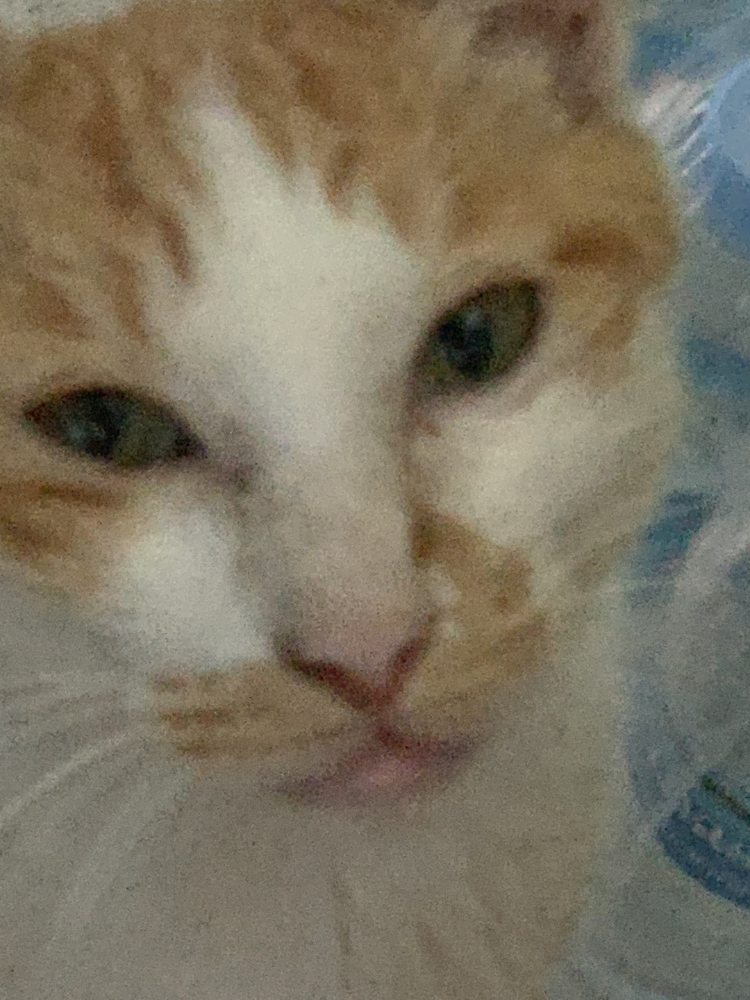

출생과 성장
밍쭈는 2021년 7월 초, 내가 군복무를 하던 김해에서 태어났다.
←요놈이 밍키
부대에 "밍키"라는 고양이(짬타이거)가 있었는데, 밍키는 건물 밖에서만 살았지 건물 안으로 들어온 적은 없었다. 근데 어느날부터 요놈이 자꾸 건물 안 통신소대 창고를 들락거려서 왜인가 가봤더니 맙소사... 박스안에 밍키와 갓태어난 새끼 두마리가 꼬물거리고 있었다. 근데 자세히 보니 새끼 중 한마리는 기형아... 너무 일찍나온것인지, 아니면 영양분을 못받은건지 몸이 제대로 형성되지 않은 좀 안타까운 모습으로 나와서 꿈틀거리고있었다. 밍키도 요놈을 자기 자식으로 인정안하는지 쳐다도 안보고 멀쩡한 한마리에게만 젖을 주고 있었다. 그렇게 기형아는 2일쯤 뒤 죽어서 내가 묻어줬고, 나머지 살아남은 한마리가 바로 '밍쭈'.